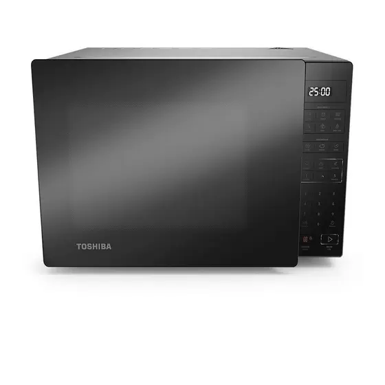
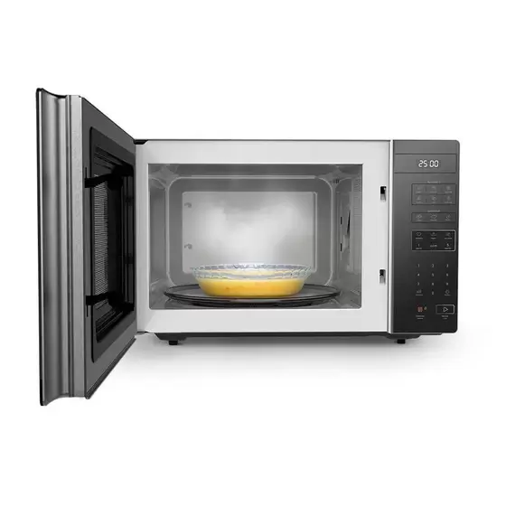

|
A melhor loja do Brasil. |
Microondas Toshiba 35l
 |

 |
R$600,00 |
O Micro-ondas Toshiba 35 Litros Cinza com Porta Preta EM35PB(GR) – 220 Volts veio para trazer novas tecnologias, um design sofisticado com porta espelhada, sem bordas e com puxador embutido para sua cozinha. Sua tecnologia SmartPlate facilita a remoção de xícaras e canecas, retornando a alça dos recipientes para a posição inicial, além de proporcionar mais economia de energia com a função ECO.
Conta com função Baby Care, auxiliando a esterilização de acessórios de bebês e aquecer papinhas e função Tira Odor, que com um clique é possível amenizar os odores retidos no aparelho. Além de todas essas facilidades, possui Menu Descongelar e Receitas Pré-Programadas para mais praticidade no seu dia a dia.
Tecnologia SmartPlate:
Facilita a remoção de xícaras e canecas,retornando a alça dos recipientes para a posição inicial.
Design Moderno:
Design sem bordas e com puxador embutido.
Função Eco:
Mais economia de energia com o visor desligado.
Função Tira Odor:
Com um clique é possível amenizar os odores retidos no aparelho.
Função Baby Care:
Ideal para esterilizar acessórios de bebês e aquecer papinhas. Mais cuidado para sua família.
Menu Descongelar:
Programa ideal para descongelar carne,frango e feijão.
Receitas pré programadas:
Mais praticidade no seu dia a dia.
Luz do visor em LED:
Mais tecnologia na sua cozinha.